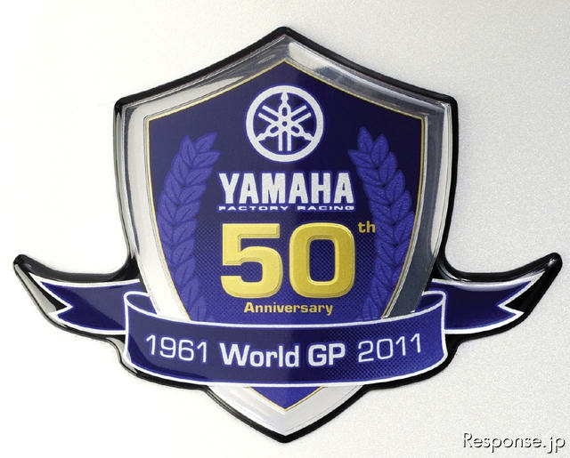

The motorcycles used in MotoGP™ are purpose-built, purebred racing bikes - ‘prototypes’ - which are not available for purchase by the general public and cannot be legally ridden on public roads.
The technical regulations to which Grand Prix teams must adhere to when they build their bikes for MotoGP™ competition provide a simple guide to the type of machinery the riders use.
Engine sizes permitted in each class are as follows:
MotoGP™ - As of the 2012 season, the maximum engine displacement permitted is 1000cc with a maximum of four cylinders and maximum bore of 81 mm - 2-stroke engines are not allowed. A maximum of 5 engines may be used by each permanent contracted rider for all the scheduled races of the season. Penalty for infringement of this means the rider will start from the pit lane 10 seconds after the start of the race.
From 2012, teams not entered by one of the major manufacturers may seek CRT status. Teams entered as CRT will benefit from less restrictive rules on the number of engines that may be used in a season, and the fuel allowance during a race is larger. Under the "Claiming Rule", teams operating under CRT status agree to allow up to four of their engines per season to be claimed, after a race, by one of the major manufacturer teams at a cost of €20,000 each including transmission, or €15,000 each for the engine alone.
Moto2™ - Moto2 Official Engine, currently supplied by Honda. This is a 600cc 4-stroke engine.

Moto3™- 250cc four-stroke, one cylinder machines.
Apart from the displacement and number of cylinders for each class, engine type is restricted to reciprocating piston engines with no super or turbo charging, while the bike may have no more than six gears.
The following are the minimum weights permitted:
MotoGP™
Up to 800cc – 150 kg
801 - 1000cc - 160 kg
Moto2™ motorcycle + rider 215 kg
Moto3™ motorcycle + rider 148 kg
The teams may add ballast to their bikes to achieve the minimum weights and the weight may be checked at the initial technical control, but the main control of weight is made at the end of practice sessions or at the end of the race. For the Moto2™ and Moto3™ classes the weight checked is the total of the rider with full protective clothing plus the weight of the motorcycle.
In normal circumstances each MotoGP™ team has two bikes prepared for racing for each rider, so that there is no delay should a problematic bike need to be replaced before a race or before or during a practice or qualifying session. The 2006 season saw the first instance of ‘flag-to-flag’ racing at the Australian Grand Prix at Phillip Island, during which the MotoGP™ riders changed machinery mid-race to use bikes with wet tyres.